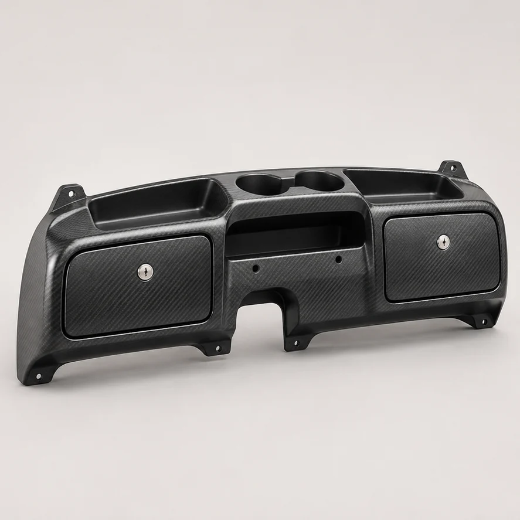

Storage & dash
Locking Dash Panel
Part No. 23-001
$241.95 USD
Lockable compartments add enclosed storage to the Precedent dash, with a carbon-fiber-look finish.
Vehicle fitment
Club Car Precedent · 2009–2016
Check fit detailsRetailer sets final price, availability and shipping.
Will it fit?
| Model | Catalog years |
|---|---|
| Club Car Precedent | 2009–2016 |
For the late-2008 (2008.5) dash design onward. The finder lists complete years 2009–2016. A 2008 cart needs a build-date check. Early 2008 uses a different panel.
Installation notes
- Park the cart, remove the key and compare the original dash to the drawings in the MadJax installation sheet.
- Use a T25 Torx driver to remove the original trim fasteners. Keep the factory screws for reassembly.
- Seat the new dash behind the golf ball retainer. Reinstall the original trim and fasteners as shown in the sheet, then check both doors and controls.